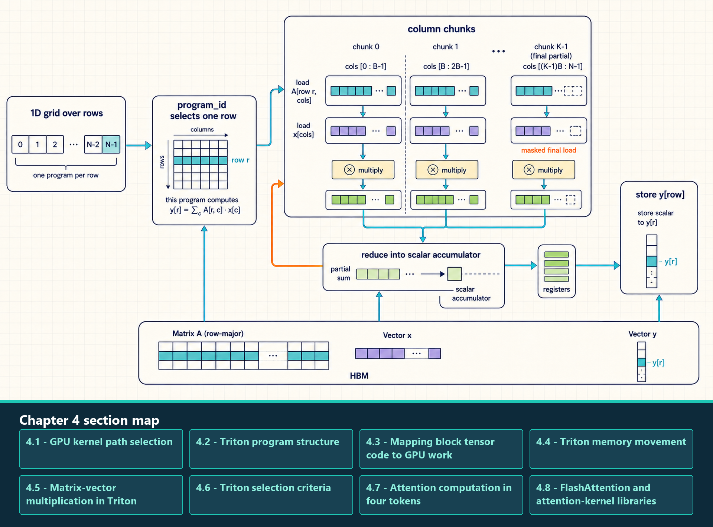
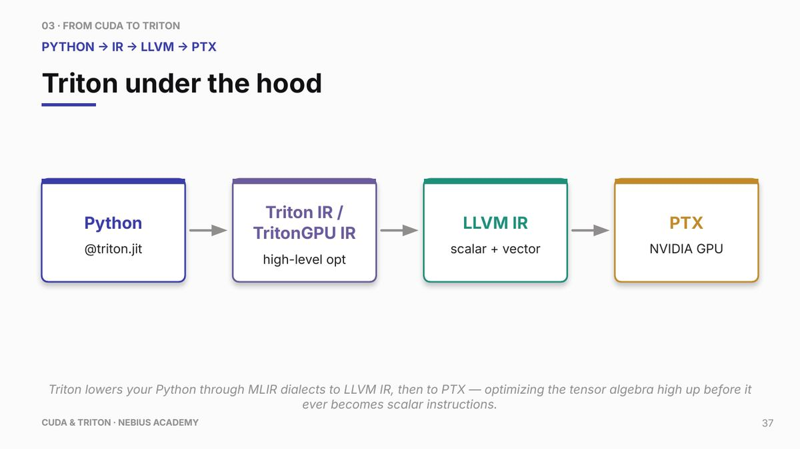

4 Triton and Custom Kernels
Triton is a Python-based language and compiler for writing GPU kernels at a block-tensor level. Its main abstraction is a program instance that handles a tile of data and is lowered into GPU code.
Triton is useful when the hot operation is regular, the library kernel does not match the needed layout, or fusion can remove intermediate HBM traffic. Vendor GEMM kernels remain the usual baseline for standard matrix work, while distributed communication and request scheduling belong to their own software layers.
A Triton kernel still obeys GPU constraints. Program IDs map to tiles. Block sizes shape parallelism and register pressure. Masks protect boundary loads. Strides define physical memory layout. Loads and stores still need coalescing and locality.
A Triton kernel can handle one tile of a projection, normalization, or decode-side operation. It controls how program IDs map to memory addresses and arithmetic, while the training loop or serving scheduler remains responsible for the larger workload.
The matrix-vector kernel launches a one-dimensional grid with one program instance for each matrix row.

A program selects its row, walks through column chunks, masks only the final partial load, multiplies matching matrix and vector values, and reduces them into one scalar accumulator before one scalar store. Triton chooses lower-level thread and instruction mapping during compilation; generated code and profiling are needed to confirm the resulting hardware behavior.
4.1 GPU kernel path selection
A PyTorch expression, a Triton kernel, and a CUDA C++ kernel reach GPU work through distinct roles. PyTorch expresses model operations; a compiler can transform those operations; Triton and CUDA C++ provide alternative source languages for a custom kernel; and the CUDA runtime submits the resulting work to the GPU.
The list separates the execution paths by who supplies the kernel and which decision the engineer controls. A model-level expression can already dispatch an efficient vendor kernel, so writing custom code is justified only by a measured mismatch between the existing path and the workload.
- PyTorch eager dispatch: Model-level Python calls such as matrix multiplication or attention dispatch one or more GPU operations through PyTorch. The selected implementation can be a vendor library kernel, a framework kernel, or another supported backend; its performance follows the implementation selected for the operation.
torch.compilepath: PyTorch captures a compatible graph region and lets compiler components such as TorchInductor fuse operations or generate kernels. Generated Triton is one possible compiler result; the engineer primarily controls the source graph, shapes, and layout.- Hand-written Triton kernel: A custom tile-level kernel written in the Triton Python domain-specific language. The engineer controls program instances, offsets, masks, tile shape, reductions, and selected compile-time configurations.
- CUDA C++ kernel or extension: A custom kernel authored with explicit thread, block, shared-memory, synchronization, and CUDA C++ controls. Choose this custom-kernel path when its lower-level controls or ecosystem integration are needed.
- Vendor library kernel: A prebuilt GPU kernel reached through an API such as cuBLAS, cuDNN, a supported attention backend, or a TensorRT-style runtime. It provides the usual baseline for standard GEMM-like work because the implementation is already specialized and tuned.
- CUDA runtime: The host-side API and driver-facing layer that manages device contexts, streams, events, memory copies, and kernel launches. It provides the submission and resource-management interface for both Triton and CUDA C++ paths.
Triton is the right custom-kernel path when profiling isolates one regular single-GPU operation whose layout, fusion boundary, masking, or reduction pattern is poorly served by the existing compiler or library path. The additional responsibility is to validate tile shape, memory strides, masking, register pressure, numerical correctness, and end-to-end timing against the existing implementation.
Serving software admits requests and manages the KV cache. Distributed software schedules communication between ranks. The CUDA runtime submits kernels and copies to streams. A Triton kernel directly defines the addresses and arithmetic of one tensor operation; changing that kernel can still alter end-to-end latency, memory pressure, and the timing seen by training or serving software, but it does not implement admission, cache-allocation, or rank-communication policy.
4.1.1 Kernel implementation choices
Kernel implementations differ by who writes them and where an engineer can make a useful change. The source form determines whether the first change belongs in custom kernel code, the captured graph, a library call, or the runtime launch sequence.
Use this four-way classification to decide where a performance change belongs:
- Hand-written Triton: A performance engineer or library author changes tile shape, masks, strides, reductions, launch grid, or autotuning; the result is a compiled GPU kernel launched through CUDA.
- Compiler-generated Triton: TorchInductor or another compiler backend produces the kernel. The useful inputs to change are the source graph, dimensions, layout, fusion legality, and compiler settings.
- CUDA C++ extension: A performance engineer or library author changes threads, blocks, shared memory, synchronization, and CUDA C++ integration; the result is a compiled GPU kernel.
- Vendor library kernel: A vendor supplies the prebuilt kernel. The application changes the API choice, dimensions, dtype, layout, and supported backend path rather than the kernel source.
A workload can launch all four forms over the same GPU tensors. The composition point is the framework graph or host launch sequence; a Triton source function does not inline arbitrary CUDA C++ or vendor-library kernel source.
A manually written @triton.jit kernel is lowered through Triton intermediate representations and LLVM toward NVIDIA Parallel Thread Execution (PTX) code.

PTX is an intermediate instruction-set representation, not the final device instruction stream. The NVIDIA driver still compiles or loads executable device code. This figure describes the Triton kernel path, not the full PyTorch compiler stack.
The lowering path changes who controls each optimization, but every route still produces GPU code that CUDA submits and executes. All four paths eventually submit GPU code; a hand-written Triton kernel exposes that work as program instances, offsets, masks, loads, reductions, and stores.
4.2 Triton program structure
A Triton program has a host-side launch and a device-side tile program. Python code allocates tensors, chooses the launch grid, and calls the JIT-compiled function. The Triton program instance then uses its program ID to decide which tile of memory it handles.
@triton.jit: Marks a Python function for Triton compilation.- Program instance: One logical tile of work selected by the launch grid.
tl.program_id: Identifies which tile the current program instance handles.tl.arangeand offsets: Create vectorized positions inside the tile.- Block pointers and strides: Describe tiled memory regions, physical layout, and boundary behavior.
- Masks: Prevent out-of-bounds loads and stores on partial tiles.
tl.loadandtl.store: Move values between GPU memory and registers.- Reductions: Operations such as
tl.sumcombine values inside the tile.
Those primitives describe the body of one program instance. Compilation adds a second set of concerns: when variants are created, which values are fixed at compile time, and whether the selected tile uses too many registers.
- JIT compilation: Triton compiles the decorated function when it is called for a particular device, dtype, and compile-time configuration. The first call can include compilation and autotuning overhead, so timing should separate warmup from steady state.
tl.constexpr: A compile-time parameter. Values such as tile size, loop bounds, or boolean feature flags can specialize generated code rather than being loaded as ordinary runtime tensor values.- Specialization: The compiler can generate different code for different constexpr values, shapes, strides, or selected autotune configurations. This is why one Triton function can produce several compiled kernel variants.
- Register pressure: Large tiles, many temporaries, or unrolled loops can consume too many registers per program instance. More registers can reduce occupancy or spill temporary values to CUDA local memory, a per-thread address space commonly backed by device memory rather than on-chip storage.
- Spilling: When values that should have stayed in registers are placed in CUDA local memory because register demand is too high. In profiler output, spilling often appears as unexpected device-memory traffic and stalls.
A useful reading order is launch grid first, then program ID, then offsets, then loads, arithmetic, and stores. If performance is poor, inspect whether offsets are coalesced, masks are excessive, the tile is too small or too large, and the reduction uses registers rather than unnecessary shared-memory-like traffic.
4.3 Mapping block tensor code to GPU work
Mapping means assigning each Triton program instance to a tile of output data and then translating tile-relative positions into physical memory addresses. This is the bridge between readable block-tensor code and real GPU loads, arithmetic, and stores.
Triton code is written as if each program operates on vectors or blocks. The compiler turns that block program into GPU instructions. PyTorch usually allocates input and output tensors before the kernel runs; the Triton kernel reads and writes those buffers. The kernel does not control model memory. It controls the mapping from program instances to addresses and operations.
Good Triton kernels use tile sizes that expose enough parallelism without excessive register pressure. They keep hot values in registers, use masks only where necessary, and choose memory strides so adjacent lanes read adjacent data. Autotuning can search tile parameters, but the benchmark must match the real workload.
4.4 Triton memory movement
A Triton program controls memory movement inside one GPU kernel. It uses the same registers, on-chip storage, caches, L2, and HBM as a CUDA C++ kernel, while expressing the address calculation and tile schedule through Triton operations.
4.4.1 Moving tiled data
The first memory decision is which addresses each program instance touches. Loads and stores become efficient when adjacent lanes access adjacent useful data, masks cover only true boundaries, and block pointers describe the physical layout without unnecessary materialization.
tl.load: Reads elements from GPU memory into values used by the program instance. Pointer arithmetic, dimensions, masks, and cache options determine the resulting transactions.tl.store: Writes program results to GPU memory. Output layout and masks determine whether stores are contiguous and whether partial tiles waste traffic.- Mask: A lane-level validity condition for partial tiles or irregular boundaries. Correct masking protects memory safety; excessive masking can reduce useful work.
- Block pointer: A structured description of a tiled memory region, including dimensions, strides, offsets, block dimensions, and boundary behavior.
- Program order: The mapping from program IDs to tiles. Reordering tile visits can increase L2 reuse without changing the mathematical result.
4.4.2 Cache and tile-order hints
Triton memory operations can express supported cache and eviction intent, while tile order creates the structural reuse that makes cache useful. Measurement should establish the reuse pattern before a hint is treated as an optimization.
- Cache modifier: A
tl.loadortl.storeoption that requests supported lower-level cache behavior, such as cache-all, L2-oriented, streaming, or write-through behavior depending on the operation and backend. - Eviction policy: A replacement preference such as evict-first or evict-last where supported. It guides replacement behavior and does not guarantee residency.
- Grouped tile order: A program-ID mapping that visits related output tiles close together so they can reuse matrix or activation data through L2.
- Autotuned configuration: A compile-time choice of tile dimensions, warps, stages, or related parameters measured for the target range of tensor dimensions.
Tune layout and program order first, tile dimensions and occupancy second, and cache hints only after profiler evidence shows that replacement behavior still matters.
Efficient tiled movement begins with correct offsets, strides, masks, and program order; a cache hint cannot repair a layout that fetches unnecessary sectors. The next question is which memory problems belong to Triton kernel code and which belong to the CUDA runtime or host program.
4.4.3 CUDA and Triton responsibility map
The comparison below assigns each memory problem to the runtime or kernel layer that can change it. This prevents a host-transfer problem from being treated as tile code and prevents a coalescing problem from being treated as a runtime flag.
| Memory issue | CUDA/runtime responsibility | Triton/kernel responsibility | First diagnostic |
|---|---|---|---|
| Host-device copy | Placement calls, pinned buffers, copy APIs, streams, and copy engines | Outside the Triton kernel body | Timeline copy spans and synchronization |
| Kernel HBM traffic | Selected CUDA, vendor, or generated kernel path | tl.load/tl.store addresses, masks, block pointers, and tile dimensions |
Bytes moved, sectors, and useful bandwidth |
| Coalescing and stride | CUDA thread indexing, layout, vector loads, or staging | Strides, offsets, tl.arange, masks, and block layout |
Transactions per useful byte |
| L2 reuse | Launch order, sequencing, and supported persistence controls | Program-ID mapping, grouped ordering, and tile reuse | Reuse distance and L2 traffic |
| Peer or collective movement | CUDA peer access and communication backends | Outside an ordinary single-GPU Triton kernel | Topology, transport logs, and transfer spans |
4.5 Matrix-vector multiplication in Triton
To ground the Triton program structure in concrete code, we examine a Triton matrix-vector multiplication (GEMV) kernel. GEMV is useful as an example because it exposes the memory-access questions that custom kernels often need to answer: which program instance owns each output element, whether adjacent lanes read adjacent memory, how partial tiles are masked, and where the reduction lives.
In matrix-vector multiplication y = Ax, each program instance computes one element of the output vector y, corresponding to one row of the matrix A. The kernel loads elements of the matrix row and the vector x in blocks, multiplies them, and reduces the products. The point is not that every GEMV should be custom-written; the point is that this small kernel makes tile assignment, global-memory addresses, masks, reductions, and stores visible. tl.load reads values from device addresses into the program; caches may satisfy some requests, so profiler counters are needed to measure L1, L2, and HBM traffic. tl.store writes the output through the device memory hierarchy.
Example: Triton matrix-vector kernel. One program instance computes one output row. It walks across columns in BLOCK-sized chunks, masks the final partial chunk, accumulates products in FP32, and stores one scalar. The launcher supplies an M-program grid; production code must also test correctness and tune the block size.
Code example: Triton matrix-vector kernel
import torch
import triton
import triton.language as tl
@triton.jit
def gemv_kernel(A, x, y, M: tl.constexpr, N: tl.constexpr, BLOCK: tl.constexpr):
row = tl.program_id(0)
offsets = tl.arange(0, BLOCK)
acc = tl.full((), 0.0, tl.float32)
for start in range(0, N, BLOCK):
cols = start + offsets
mask = cols < N
a = tl.load(A + row * N + cols, mask=mask, other=0.0)
xv = tl.load(x + cols, mask=mask, other=0.0)
acc += tl.sum(a.to(tl.float32) * xv.to(tl.float32), axis=0)
tl.store(y + row, acc)
M, N = 4096, 4096
A = torch.randn((M, N), device="cuda", dtype=torch.float16)
x = torch.randn((N,), device="cuda", dtype=torch.float16)
y = torch.empty((M,), device="cuda", dtype=torch.float32)
grid = (M,)
gemv_kernel[grid](A, x, y, M, N, BLOCK=1024)
reference = (A.double() @ x.double()).float()
torch.testing.assert_close(y, reference, rtol=1e-4, atol=1e-3)The launcher sets a one-dimensional grid with M program instances, one per matrix row. Each instance loads chunks of BLOCK columns, converts the input values to FP32 before multiplication, and reduces the products with tl.sum. The parameters N and BLOCK specialize the loop and tile size; M is unused inside the kernel and does not need to be tl.constexpr. The final tl.store writes one scalar to global memory, potentially through a cache rather than directly to HBM.
The correctness check uses a wider FP64 PyTorch calculation and converts its result to the output’s FP32 dtype. It runs outside any timing interval. The example tolerances allow finite-precision reduction differences for this input scale; investigate mismatches rather than widening tolerances merely to pass. Chapter 11 times different tile sizes. Since GEMV has low arithmetic intensity, useful changes usually concern coalescing, tile size, register pressure, and parallel work rather than adding arithmetic.
This kernel makes the boundary concrete: the Python launcher owns tensors and grid size, while each Triton program instance owns one row’s address calculation, loads, reduction, and store. The next decision is whether writing and maintaining a custom kernel is justified by the measured workload.
4.6 Triton selection criteria
Choosing Triton is a layer-selection decision. Use it when the bottleneck belongs to one regular GPU operation or a small fused region, not when the bottleneck belongs to request scheduling, distributed communication, or a standard vendor-optimized GEMM.
- Use Triton: Profiling identifies a hot regular operation and existing kernels do not match the needed layout, fusion opportunity, or custom arithmetic.
- Use vendor libraries: The operation is a standard large GEMM or convolution already covered by highly optimized kernels.
- Use
torch.compile: The problem is many small PyTorch operations that can be captured and fused without writing a custom kernel manually. - Use a serving engine: The bottleneck is request admission, continuous batching, prefix caching, or KV-cache budget policy.
The practical rule is to use generated or vendor kernels when they fit and write Triton only when the bottleneck is a regular, measured single-GPU operation that the compiler or library does not already serve well. A hand-written Triton kernel expresses one tile-level GPU operation when the performance problem is its layout, fusion boundary, masking, reduction pattern, or memory access path. The host program still relies on the relevant library, serving, and distributed layers for their separate responsibilities.
Kernel fusion combines compatible operations so intermediate values do not always need a separate write to and read from High Bandwidth Memory (HBM). A fused kernel may keep values in registers, shared memory, or compiler-managed temporary storage, or it may recompute a cheap value instead of storing it.
Fusion is not automatically faster. A larger fused kernel can use more registers, reduce occupancy, spill values back to memory, or make scheduling less flexible. Compare the generated kernel and measured HBM traffic with the unfused baseline before keeping the change.
4.7 Attention computation in four tokens
This small attention trace connects the mathematical operation to the tensor shapes that a GPU kernel must load, multiply, normalize, and reduce. We use the query at position four. Its causal mask permits the three earlier keys and the current key, so all four keys in this example remain valid and the mask does not change the scores shown below.
The attention rule is a matrix pipeline: form query-key scores, scale them by the square root of the head dimension, normalize them with softmax, and use the resulting weights to combine value vectors.
\[ \text{Attention} = \text{softmax}\left(\frac{Q K^T}{\sqrt{d_{\text{head}}}}\right) V \tag{4.1}\]
The symbols below fix the dimensions and values for one query position. Keeping the shapes explicit makes each row of the subsequent calculation traceable to a load, matrix operation, reduction, or weighted accumulation.
- Q: One query row with dimensions 1 by 2: [1, 0].
- K: Four key rows with dimensions 4 by 2: [1, 0], [0, 1], [1, 1], and [0, 0].
- V: Four value rows with dimensions 4 by 2: [1, 0], [0, 1], [1, 1], and [0, 0].
- Head dimension: The head dimension is 2, so the scaling factor is the square root of 2.
With those inputs fixed, the table follows the computation in execution order and records both the intermediate value and the tensor dimensions at each step.
| Step | Dimensions | Value | What the kernel is doing |
|---|---|---|---|
| Query-key scores | (1 by 2)(2 by 4) -> 1 by 4 | [1, 0, 1, 0] | Loads one query row and four key rows, then performs dot products. |
| Scale | 1 by 4 | [0.707, 0.000, 0.707, 0.000] | Divides by the square root of 2 before exponentiation to control softmax concentration. |
| Normalize | 1 by 4 | [0.335, 0.165, 0.335, 0.165] | Turns scores into weights that sum to one. |
| Weighted values | (1 by 4)(4 by 2) -> 1 by 2 | [0.670, 0.500] | Reads value rows and accumulates the weighted output vector. |
\[ Q K^T = [1, 0, 1, 0] \tag{4.2}\]
\[ \text{scaled scores} = [0.707, 0.000, 0.707, 0.000] \tag{4.3}\]
\[ \text{attention weights} \approx [0.335, 0.165, 0.335, 0.165] \tag{4.4}\]
\[ \text{attention output} \approx [0.670, 0.500] \tag{4.5}\]
The computation exposes the performance distinction used later in the guide. The score matrix has one row in this trace, but for a prompt with T query positions it grows toward T x T. A tiled attention kernel keeps score tiles and softmax state on chip instead of writing the complete score matrix to HBM. The mathematical result stays the same; the memory path changes.
This small attention calculation establishes the mathematical result that an optimized kernel must preserve. The next section shows how FlashAttention changes the movement and storage of intermediate values without changing the attention operation itself.
4.8 FlashAttention and attention-kernel libraries
The same locality ideas used in custom kernels appear in production attention kernels. FlashAttention is an IO-aware attention algorithm and kernel family. It evaluates the standard attention formula without materializing the full N-by-N attention matrix in HBM, streams query, key, and value tiles through on-chip resources, and maintains online softmax statistics. The result is mathematically equivalent to standard attention, while finite-precision evaluation order can change rounding.
The bottleneck it solves is memory traffic. In standard attention, calculating softmax over query-key scores can write and reread an O(N²) matrix. FlashAttention reduces those HBM round trips by fusing the attention computation into tiled kernels. Later versions improve scheduling, parallelism, and hardware utilization rather than changing the definition of attention.
- FlashAttention-1: Uses tiled online softmax to evaluate the standard attention result up to floating-point rounding without materializing full score and probability matrices in HBM. Its additional activation storage is linear rather than quadratic in sequence length; IO saving depends on tile shape and available on-chip resources.
- FlashAttention-2: Improves work partitioning across thread blocks and warps, reduces non-matrix-multiplication work, and reduces shared-memory communication. Better sequence-length parallelism can raise occupancy and substantially improve speed over FlashAttention-1 for compatible shapes.
- FlashAttention-3: Uses Hopper features such as Tensor Memory Accelerator (TMA), warp specialization, and interleaving of matrix multiplication with softmax work to overlap movement and computation. Its FP8 path is hardware- and kernel-dependent rather than a generic property of every attention implementation.
- xFormers attention kernels: An implementation family of optimized and memory-efficient attention paths. Eligibility and benefit depend on dtype, mask, head dimension, sequence dimensions, and the selected backend.
Online softmax is the mathematical device that makes blockwise evaluation equivalent to full softmax apart from finite-precision ordering and rounding. A query row sees key blocks one at a time. The kernel keeps three running objects for that row: the current maximum score m, the denominator sum l, and the accumulated output vector o. When a new block arrives, the new block maximum is compared with the old m. If the maximum increases, the previous denominator and output accumulator are rescaled by exp(old_m - new_m) before the new block contribution is added.
Online softmax state trace
Scores for current block: Compute q dot k for a tile of keys. These scores live on chip for the tile rather than being written as a full attention-score matrix in HBM.
Running max m: Tracks the largest score seen so far for numerical stability. A larger new block maximum rescales earlier contributions.
Running sum l: Tracks the softmax denominator across all processed key blocks after rescaling to the current maximum.
Running output o: Accumulates probability-weighted value vectors across blocks, again rescaled when the running maximum changes.
Store final output: After all key/value blocks are processed, the normalized output is written without ever materializing the full attention matrix.
FlashAttention shows how a kernel can reduce HBM traffic without changing the mathematical attention result beyond floating-point ordering and rounding. The next question is whether that traffic reduction, arithmetic throughput, or launch behavior actually limits the measured workload; Chapter 5 supplies the models and profiler evidence needed to answer it.